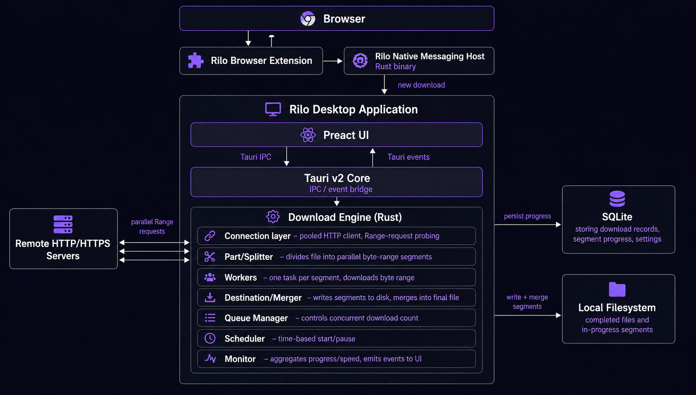
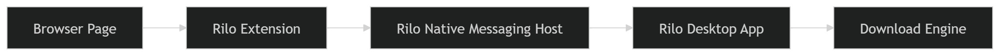
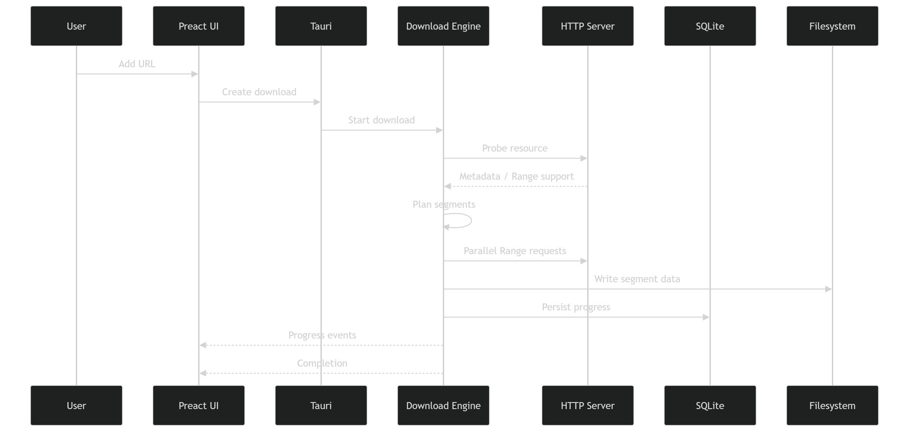

Download faster.
Stay in full control.
Rilo is a native Windows download manager powered by a multi-connection Rust engine with pause & resume, download scheduling, rate limits, SQLite persistence, and Chrome/Firefox link catching.
Windows 10 / 11 (x64) · MIT License · Self-Contained Executable

Capabilities
Everything you need to manage downloads.
Designed for reliability, speed, and clean user experience without bloat.
Multi-Connection Acceleration
Splits large files across multiple dynamic HTTP Range chunks to maximize bandwidth throughput and connection speeds.
Pause & Resume
Pause active downloads at any point and resume seamlessly from persisted byte progress without restarting from zero.
Browser Integration
Route downloads directly from Chrome and Firefox into Rilo via WebExtensions Manifest V3 and Windows Native Messaging.
Speed Limiting
Control download bandwidth per task or globally using a token-bucket rate limiter to prevent network congestion.
Download Scheduler
Configure daily or time-based automated download queues and post-completion actions like system sleep or shutdown.
SQLite Persistence
Download history, part ranges, HTTP headers, and metadata are safely stored in SQLite to survive app restarts.
Automatic Retry System
Automatically recovers interrupted connections or transient server errors using configurable exponential backoff.
Clipboard & Batch Import
Instant URL paste button with automatic URL extraction from surrounding plain text while preserving tokens and signatures.
Archive Extraction
Extracts completed .zip, .tar.gz, .7z, .bz2, and .xz files with Zip-Slip path traversal protection.
Workflow
How Rilo handles downloads.
From link capture to final file verification in four simple steps.
Find a File
Click a download link in Chrome/Firefox or paste a URL directly into Rilo's desktop input dialog.
Rilo Receives It
Native messaging passes the request directly to Rilo, automatically launching the app if closed.
Rust Engine Executes
Tokio async workers probe HTTP headers, split ranges into parallel connections, and write chunks safely.
File Complete
Segments are merged into the final file, logged in SQLite, and optional post-actions (extract, notify) trigger.
Send downloads straight to Rilo.
Install the lightweight Rilo browser extension for Chrome or Firefox. When link catching is enabled, downloads are intercepted automatically and routed into Rilo's high-speed download engine.
- Primary Catch Links toggle switch with compact ~320px popup UI
- Right-click "Download with Rilo" context menu on any link
- Zero background polling — communicates via standard Windows Native Messaging
- Auto-launches Rilo desktop process if application is closed

Technical Blueprint
Built for performance and reliability.
Decoupled architecture connecting browser WebExtensions to a native Rust engine.
Engine Mechanics
Why Rilo is fast & resilient.
Understanding multi-segment HTTP chunking and dynamic range allocation.
Probe
HTTP HEAD request inspects Content-Length & Accept-Ranges headers.
Plan
Determines connection pool size (1 to 32 parallel threads).
Segment
Splits file into balanced byte ranges (e.g. Range: bytes=0-1048575).
Stream
Async Tokio workers write chunks concurrently to pre-allocated file target.
Persist
SQLite commits segment state continuously to enable pause & crash recovery.
Complete
Final byte verification, segment cleanup, and optional post-download extraction.
Gallery
Screenshots & Visuals
Click any image to view in high resolution.
Desktop Download Manager
Dense card view, transfer stats, toolbar & sidebar controls.
Browser Extension UI
Compact popup with primary Catch Links toggle switch.

System Architecture
Browser extension, native messaging, Tauri, Rust & SQLite.
Built completely in the open.
Rilo is transparent, customizable, and free software. Inspect the code, submit issues, or contribute improvements directly on GitHub.
Ready to try Rilo?
Download the latest self-contained Windows executable and start managing downloads with maximum speed.
rilo.exe · Self-Contained Desktop & Native Messaging Host